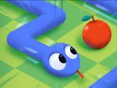
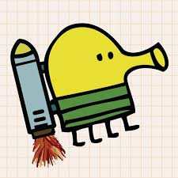
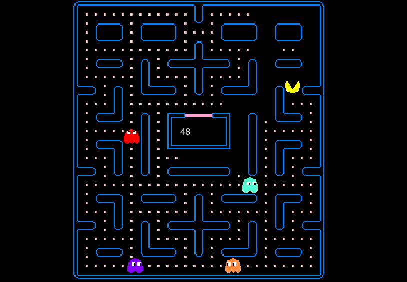

Jeg valgte dette prosjektet fordi jeg har spilt disse spillene siden jeg var ung, spesielt Doodle Jump. Målet mitt er å la andre spille disse spillene. I fremtiden tror jeg jeg vil beholde dette som en portefølje. Her kan du spille Snake, Doodle Jump og Pacman.


